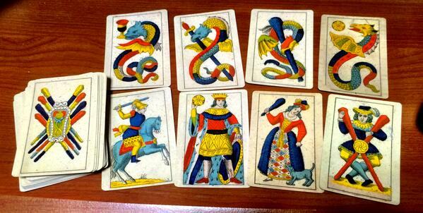
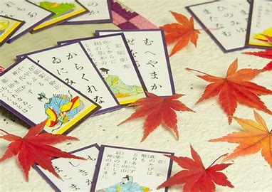

かるたとは
一人が札を読んで、他の人はそれに対応した札を取ってその枚数を競うと言うシンプルな遊びです。
一般的には百人一首を用いた「百人一首かるた」といろは歌を用いた「いろはかるた」に分けられます。
百人一首かるたは全国大会なども頻繁に行われており、日本独自であり代表的なカードゲームです。
主に正月に遊ぶ室内遊具（しつないゆうぐ）として古くから人々に親しまれてきました。
漢字では、「歌留多」「加留多」「骨牌」と書きます。

かるたの歴史
起源
かるたの起源には諸説ありますが、その中も有力な説が２つあるそうです。
①平安時代から伝わる貴族の遊びであった『貝覆い(かいおおい)』『貝合わせ』
貝合わせというのは、持ち寄った貝の美しさ比べるもので、和歌を添えて優劣を競い合ったといわれます。
一方の貝覆いは、二枚貝であるハマグリがもともと対になっているもの同士でないとぴったり合わないことを利用した遊びで、
貝の外側の模様などから対の貝を探すというものでした。
open
やがて貝の内側に、対になるように当時の文学などを題材とした絵を描くなどの装飾を施すようになり、室町時 代になると対になる貝のそれぞれに上の句と下の句を書いた『歌貝』というものが生まれたそうです。
②１６世紀頃から始まった南蛮貿易がきっかけでポルトガルから伝 えられた
『南蛮かるた』といわれるもので、ポルトガル語で『手紙』『カード』『四角い紙』などを意味する『carta(カ ルタ)』が語源となっているといわれます。
一方、日本製のかるたの発祥の地は福岡県大牟田市の三池地方で、当時の元号にちなみ『大正かるた』とよばれ たということですが、主にかけ事などに使われたために禁止命令が出たという歴史を持つそうです。
いずれにしろ元禄・享保時代のかるたも現存していることから、その頃には既に流行となっていたようです。
明治時代になると東京カルタ会が創設され、全国的な大会も行われるようになりました。
普及
１８世紀頃になると、これまで上流階級の文化だったかるたは、一般庶民に広まっていきます。
やがて、庶民生活の知恵であることわざを集めた「ことわざかるた」、それをいろは順に整列・改良した「いろ はことわざかるた」が作られると、かるた遊びの面白さに刺激された人々は、たくさんのバリエーションを作ってい きました。
遊びながら学ぶ
かるたは単なる遊びにとどまらず「文を読む」「ひらがなを理解する」「取り札の枚数を数える」「取り札の数 を比べ合う」 と子供にとっては楽しみながら学ぶことができます。
単に楽しむためだけのカードゲームではなく、遊びという形を使った古くからの教育、という風に考えることも 可能です。
特に、いろはかるたは「犬も歩けば棒にあたる」などのことわざを用いたもので、幼児にも理解しやすい内容に なっています。
